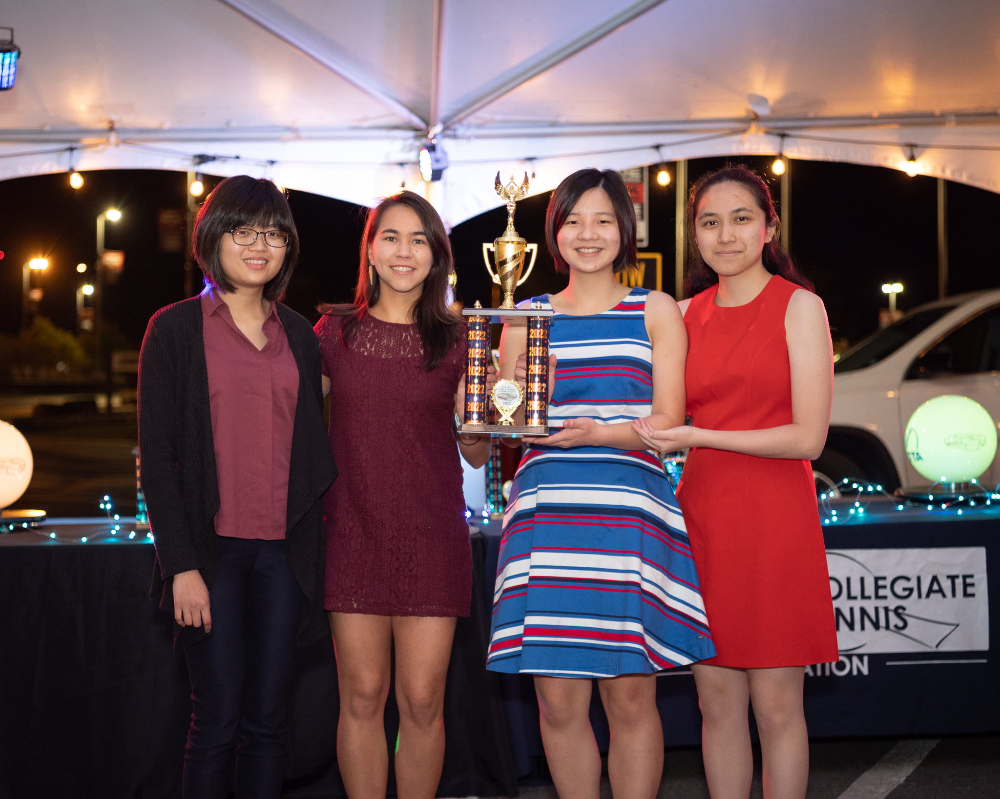

|
 |
|
 |
|
2022 - 2023 MIT Table Tennis Team
This year's tryouts were held on 9/18. Congratulations to the new MIT Table Tennis Team!

Members of the MIT Table Tennis Team at the 2022 Upper New England Fall Divisionals.
| Co-ed Team | Women's Team |
|---|---|
| Ilya Andreev | Amy Hu |
| Sean Chen | Jingting Lin |
| Rigel Galgana | Sophie Wu |
| Jingting Lin | Wan-Ni Wu |
| Lawrence Long | |
| Fabian Mohr | |
| Pedro Reynolds-Cuellar | |
| Sophie Wu | |
| Yilun Xu | |
| Jerry Zhao |
Team members are listed in alphabetical order.
2021 - 2022 MIT Table Tennis Team

The MIT Women's Team receiving third place at the 2022 National Championships!
| Co-ed Team | Women's Team |
|---|---|
| Ilya Andreev | Maria Castillo |
| Maria Castillo | Jingting Lin |
| Eddie Chan | Anastasia Nikolakopoulou |
| Jingting Lin | Sophie Wu |
| Fabian Mohr | Wan-Ni Wu |
| Anastasia Nikolakopoulou | |
| Jie Xu | |
| Yilun Xu |
Team members are listed in alphabetical order.
2018 - 2019 MIT Table Tennis Team
| Co-ed Team | Women's Team |
|---|---|
| Andrew Ilyas | Fei Song |
| Andrew Zhang | Michelle Hung |
| Brian Mills | Yixi Liu |
| Elton Lin | Yizhen Xie |
| Jie Xu | Yu-Chien Huang |
| Siddharth Sridhar | |
| Tzyy-Shyang Lin | Team Coach |
| Yixi Liu | Carlos Espinoza-Toro |
Team members are listed in alphabetical order.
Browse our photo gallery here.
Historical Records
| Season | Tournament | Awards and Recognitions |
|---|---|---|
| 2022-23 | Fall Divisionals |
|
| 2021-22 | Nationals |
|
| Regionals |
|
|
| Spring Divisionals |
|
|
| Fall Divisionals |
|
|
| 2017-18 | Divisionals |
|
For older team rosters and results, visit our Team Archives.
MIT Table Tennis Club. Maintained by Sophie Wu.